PEPPERWOOD COMMUNITY NEWSLETTER
I use AI for the banners. The pictures are from my camera. A friend suggested I break the newsletter up because it’s 12 pages. You don’t have to read it in one sitting.
TBH, I love to write and pontificate, and I’m compulsive about it. It’s okay if you don’t read it. All I want is for you to enjoy it. If you don’t like to read or you’re not into the subject, skip it.
I have no set schedule. For now it comes out when the newsletter is getting too long, when I feel inspired, or when I have free time. Whenever you feel like it, let me share what I’m experiencing from the Neighborhood in pictures and stories.
Positively,
TC
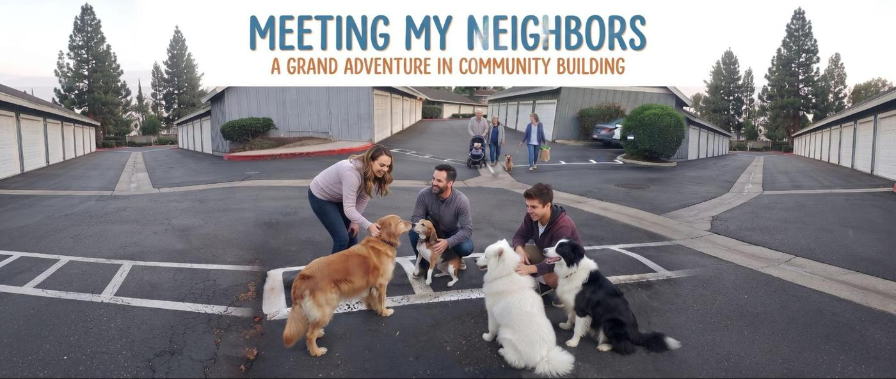
Image is an AI composite.
Meeting My Neighbors
With great risk comes great reward. I tend to shoot from the hip and clean up the mess later, so opening myself up to create a space to meet my neighbors felt like a natural, organic process. It has turned into a grand adventure, and the reward has far exceeded my expectations—not that I had any to begin with.
The neighbors in the building across the way are already connected and oh so friendly. Some have lived here longer than I have, folks I knew before my period of isolation, while others I am just meeting for the first time. But it feels different now. People seem ready to engage, much more open and friendly than I remember.
One of the first people to pull up, stop, and say hi from their car promised they would come back. And they did! They are a retired Marine and Olympic athlete who works as a nutritionist; back in the Corps, they taught diet and exercise to overweight Marines. We ended up sharing ideas about what community could be, and it was amazing how closely our visions matched.
Then there is an older couple who stop by every morning with their dogs to chat and see what I am up to. They are a wonderful example of how community works. Recently, they mentioned they had found a key—which happened to solve a mystery, as Chiwah, my housemate, had lost hers days earlier. Sure enough, after a little checking, it was her key. Community working together to solve a small mystery!
Every day, more people wave and drop by. My friend Roger, who focuses on cultivating caring communities, is amazed at how fast this is growing and constantly encourages me.
Yesterday, I met a 77-year-old who still substitute teaches. He took his time looking around, picked up a book from the bookshelf, and chatted about it before carefully returning it to its place. Another neighbor from the Fredericks side stopped to look from their car and promised to attend our official opening on October 10th.
I feel such joy and fulfillment. It is my hope that sharing this brings the same to you.
Image is AI enhanced
Take Time to Be Free
We live in a failing empire facing the sixth great extinction, climate change, forever wars, nuclear annihilation, pandemics, and killer robots. This is no time for inaction, passivity, or inertia. There is much to be done, and we are in a great transition.
And yet—wouldn’t it be constructive to spend an hour or two with neighbors and friends, forgetting all that for a little while? Relaxing. Enjoying love, connection, and play.
If hard things lie ahead, let us not anguish in fear over an unsure future. Let us take time to enjoy the good things we still have: each other, and the freedom that exists right now.
Come gather, by ones and twos or in groups of more.
Grand Opening Inaugural Event
Saturday, October 10th
10 AM – 3 PM
In the garage.
Bring yourself. Leave the weight at the door for a few hours. The tapestries are up, the lights are on, and the space is ready.
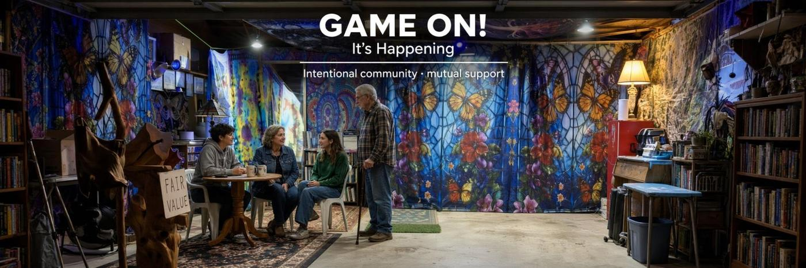
Image by AI
Game On! It’s Happening!
The power of Intentional community mutual support is working!
Yesterday the power went out, as did mine. But the power outage brought a chance to meet and chat with my close neighbor,Blake. Wouldn’t you know it, he has a mission of service. Helping others to find and get resources for their endeavors.
I had hit a wall. The carpet I waited and looked forward to, for so long, turned out to be a trip hazard. I spent my morning trying to stretch it to lay flat. It seemed futile. I ordered carpet tape and tried to imagine how I would use it. Then the bottle brushes I got to clean my bong came. They worked, but not as well as I had hoped. All the while I am wondering how people will receive the newsletter; if they would even see it or take time to read it. Everyone seems so busy and distracted by the times we are in.
I tried to write (I enjoy writing) but the ideas and words weren’t coming. I called a friend, who was having a similar experience of being beset and overwhelmed by challenges in the physical and emotional world. But it helped.
It reminded me that when I feel this way I am off my mission’s path. My mission is, “I co-create a world of permission and enjoyment, by trusting the process and surrendering the outcome.” Once again I was focused on the outcome and not trusting the process.
I woke up feeling ready to engage the process. I took time for my morning routine of coffee and taking my meds (pharmaceutical and herbal). When I came into the center, I left the door closed as the temperature was just right. I began checking my email and found my first neighbor’s response to the newsletter. It read, Loved your newsletter!!
Thanks for being vulnerable, sharing some great stories, and most of all, for taking this leap to build community for all of us.
I’m looking forward to the community event on October 10th.
You can imagine how uplifting that was. Such affirmation when I needed it! This is the power of an intentional mutual aid community!
I am ready to start my day and get focused on the process.
We Be Tripping
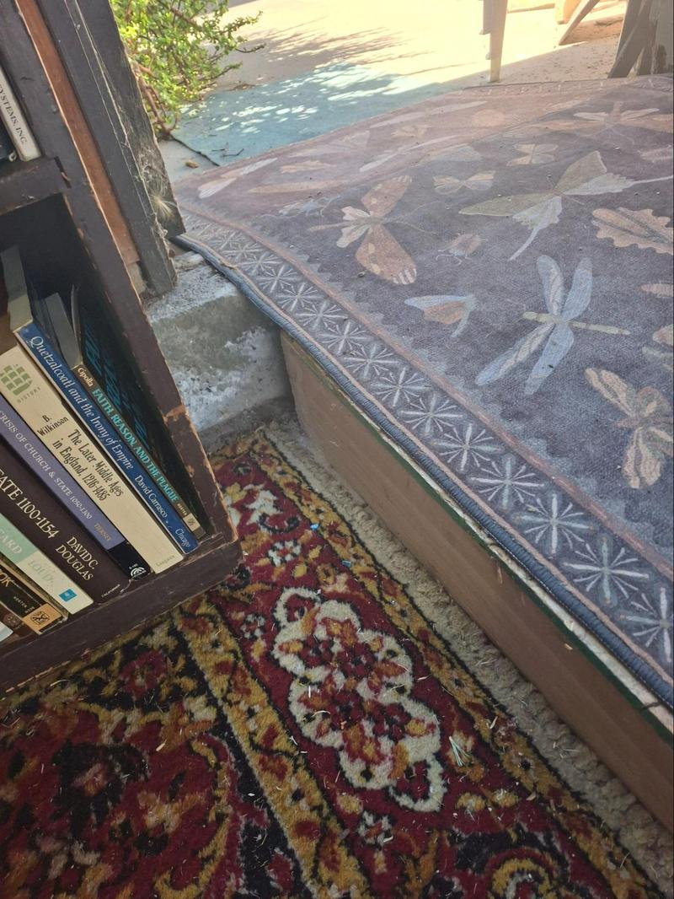
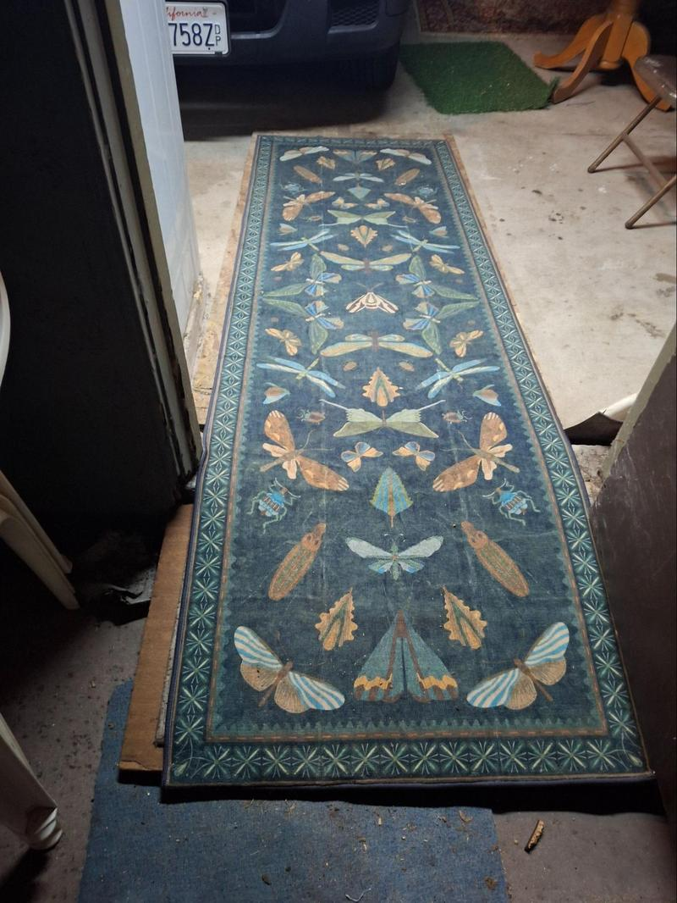
Matt added a beautiful carpet in the center. I go barefoot, so I really like it. Looking at carpets gave me an idea.
There’s a 5-inch rise from the garage to the top of the stem wall and a 2-inch step onto the patio. I built ramps and strapped them together. The straps broke, and the ramps wouldn’t stay steady. So I bought a runner and fastened it so they would stay put.
That set me to buying more carpets. I ordered three. Two arrived right away, but the red one I wanted to match Matt’s never shipped. I waited and waited until they finally told me it wasn’t coming. I reordered one that wasn’t as red as I’d hoped, but the price was right. Another fifteen-day wait.
I was so excited the day it was due. It didn’t arrive until late afternoon. It had been bundled so tightly that it stayed stretched and was a definite trip hazard. I hoped that if I left it alone for a while it would lie down.
I had a Cultivating Caring Communities meeting, so I warned Chiwah, went to the meeting, finished and sent the newsletter (with a big typo in the last story), and crashed soon after.
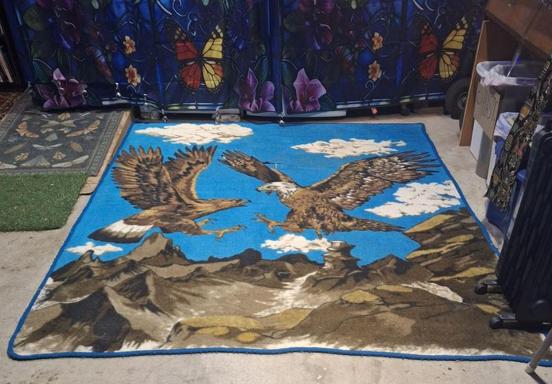
I told you about my day of doubt and the rebound that followed. It was Dungeons & Dragons night, so I ate an early supper and slept until after the game—a 10:30 start. I had the carpet tape. I measured and marked where it would go. You have to put the tape down first, then spread the carpet, peel the paper off the double-sided tape, and work the carpet into place—all on my knees on concrete.
The eagles were chosen because they fit the space between the ramp and the coffee counter. It took hours with just a measuring tape, a pencil, and a learning curve. I got it close enough, then ran out of tape and went to bed.
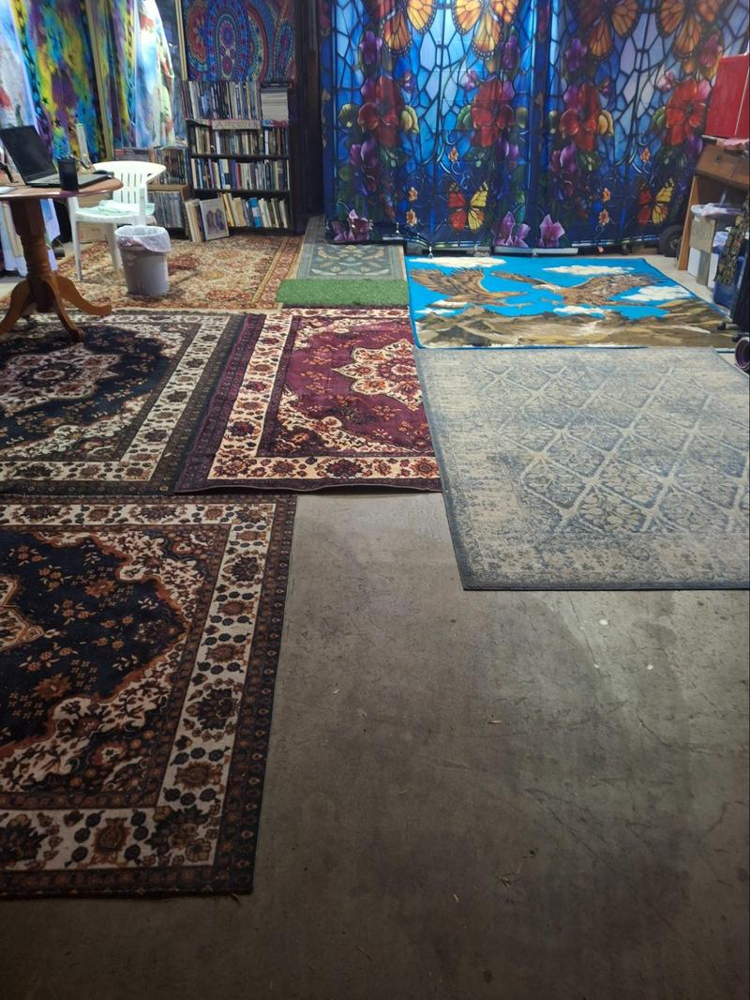
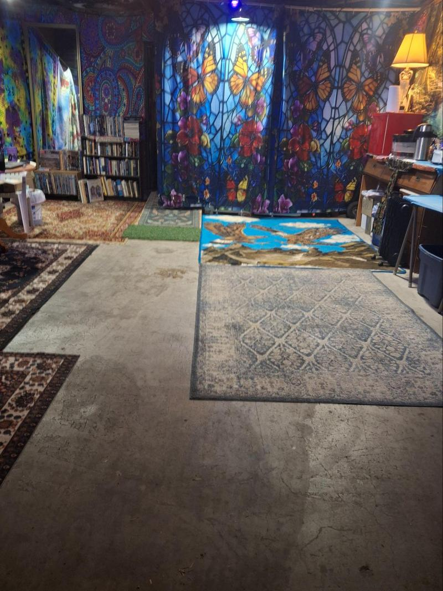
The next morning I took the trash to the dumpster and found a rolled-up carpet. I snagged it. When I unrolled it I was pleased: good condition, and it laid flat. It was close to the same width as the eagles and the obvious next piece.
It became clear the unruly new carpet could be cut to fill the remaining space. Its length fit perfectly, but it tapered from 38½ inches to 36½ inches wide. Again, with only a measuring tape for a straightedge, it was close enough.
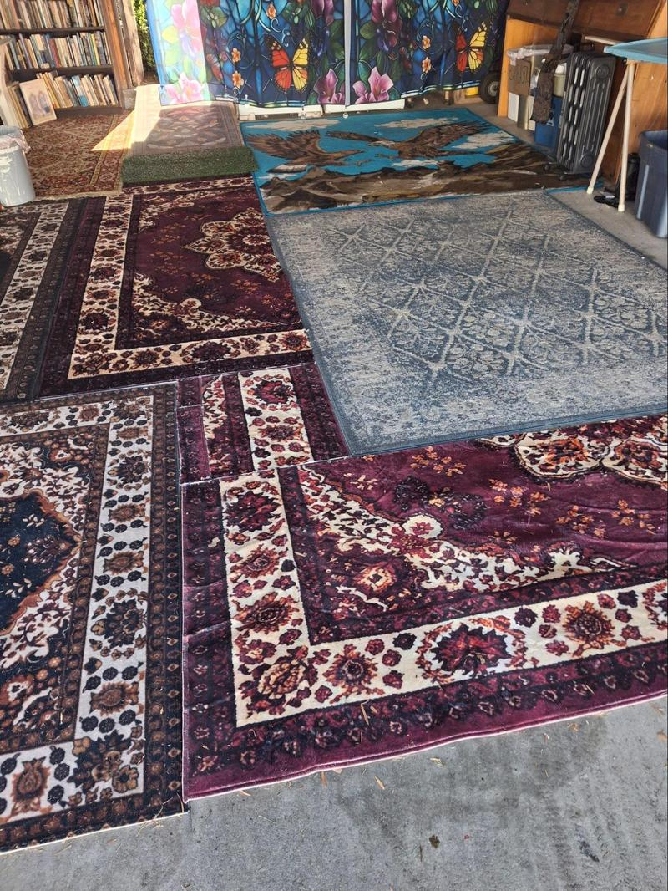
The leftover half of that cut matched the space at the end of the gray carpet—the one that was a gift from the cosmos. It was long enough that I could trim the end and finish the last little gap.
When I walk through the space now, with its quilt mosaic of carpets, I feel like I’m tripping. The center—with tapestries, carpets, and black lights—is taking on the personality of that transition in my youth. The times they were a-changin’: the war in Vietnam, civil rights, and the realization that the promise of freedom and equality had become authoritarian control and propaganda. We grew our hair long and dressed in a mix of mod and grunge. The powers that make up the invisible government of aristocrats and oligarchs had our leaders assassinated. Hippies became freaks, finding an instant connection of peace, love, and understanding.
In 1971 Lewis Powell wrote a memo based on his belief that we had too much democracy. It was a blueprint for corporations and that same elite to gain total control.
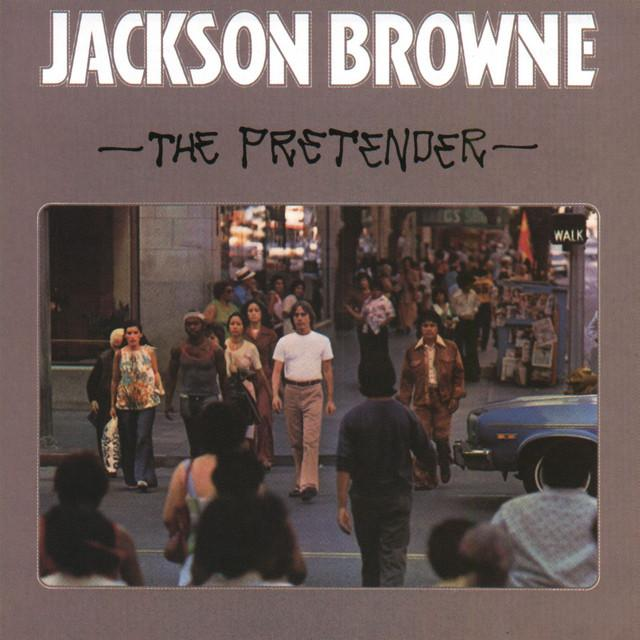
Jackson Browne’s “The Pretender” chronicled the resignation that followed when they launched the War on Drugs, jailed activists, and killed four at Kent State:
I’m going to rent myself a house
In the shade of the freeway
Gonna pack my lunch in the morning
And go to work each day
But the question became:
I want to know what became of the changes
We waited for love to bring
Were they only the fitful dreams
Of some greater awakening?
And now, after decades of government declining from something meant for the good of people into a boot on the neck of us all—extracting more and more wealth and power from ordinary people upward to the gatekeepers, propagandists, corporations, and oligarchs—I feel us returning to connection, solidarity, and that “greater awakening.”
When I came out of my inaction and isolation I found my neighbors friendly and welcoming. What I hoped to inspire in the community has already begun. I feel that instant connection and unconditional acceptance.
So come to the center and share the renewal of the dreams of my youth. Let us trip on each other—but be careful of tripping on the carpets.
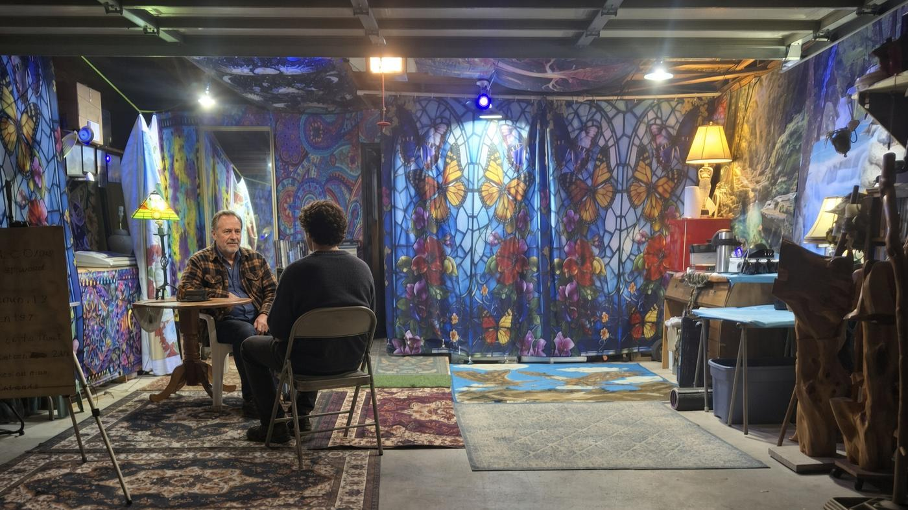
AI image
Three Hours After Midnight
They came down at two in the morning.
I had only met one of them a couple of nights before. He brought his friend. I asked them to sit. One was a little out of it. The other was fully present — leaning in, listening, talking like the hour didn’t matter.
He told me the things that still matter when everything else feels uncertain. He loves hard work. Money is not the point. Friends are. If his needs are met, he said, he would still do what he does. He would do it for free. It is part of the future, he is already living it, not just the one I dream about.
He is 24. He has his own business. He is getting married in June.
We sat for three hours.
I showed him pictures. I showed him RedNote — 132.1K followers. He couldn’t believe it. We had made a video together on the platform; in about two hours it had 615 views, 81 likes, and 7 comments. I showed him drawings people had made of me. I showed him some of the work. He looked at all of it the way someone looks when they are not performing interest.
These are hard times. He knows it. He smiles through it anyway. He was of good cheer. He was honest. He was being a friend.
I told him stories from my life. He told me what he is walking through. That is most of what happened: two people, late at night, telling the truth and listening to it.
I did not expect company at 2 a.m. I did not expect three hours. I did not expect to feel, afterward, that the future I keep talking about had just sat across the table and stayed.
He is doing it. He is smiling through it. And for a few hours in the dark, that was enough.
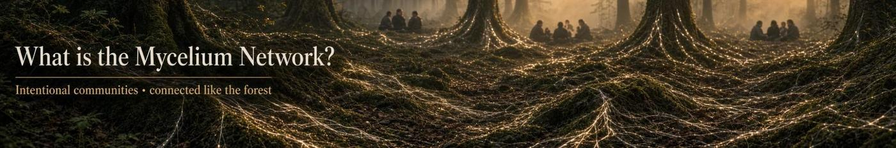
AI image
What is the Mycelium Network?
I have been advised that most people won’t know what I am talking about when I talk about the mycelium network. I have been working on sharing and creating the mycelium network for four years.
The idea is based on the mycelium that has been discovered in nature, that connects the trees in the forest.
My vision is that we will be connected in small intentional mutual aid communities that are further connected forming a decentralized system that allows us to govern ourselves locally, regionally, nationally, and globally.
I want to share the video when I first became aware of the possibility of a new system of self-government built like mycelium. Watch it here, 3 minutes
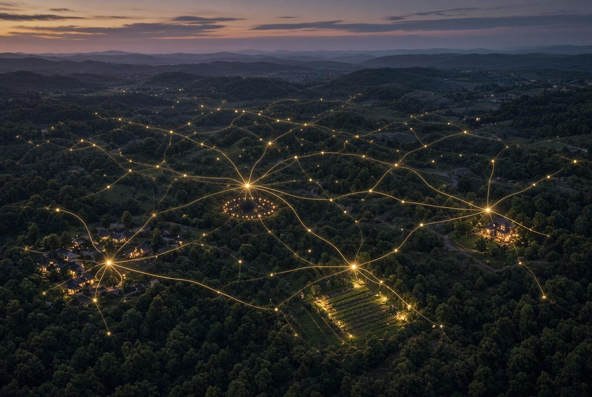
AI image
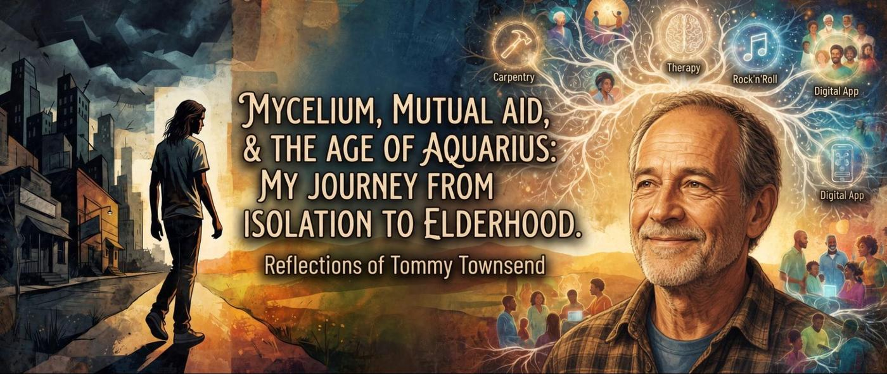
AI enhanced image
From Flight to Foundation: Building Communities for the New Paradigm
Growing up in a small town in the Jim Crow South, the word community felt heavy and restrictive. In that old world built on fear, rules, and fitting in, belonging meant hiding who you really were.
For a long time, I wondered: Was I running away from community itself, or was I just fleeing the suffocating rules and the constant pressure to conform?
The answer became clear the day I packed up and drove toward Orlando, thinking to myself: So begins the life of Tommy Townsend.
I had been told to go to the city and drop acid. I worked on the early construction of Disney World, made it to Atlanta, and took that drop. Looking back, the Beatles and LSD changed everything for me. They turned a small-town kid escaping a closed-minded, strict southern life into an open-minded guy in the counterculture. We were focused on the Age of Aquarius—a time when people could work for real fulfillment instead of just surviving by the sweat of their brow.
Sometimes the lights all shining on me, other times I could barely see. What a long, strange trip it’s been.
That trip led me to carpentry, a trade built on confidence and independence. After my apprenticeship in Knoxville, Tennessee, my work took me to Santa Fe, New Mexico. There, I helped build a New Age holistic center. People weren’t ready for alternative healing, so I called it a "Frogcastle"—a safe place where people could look inside themselves and accept all the parts they hide, deny and repress.
Around that time, feeling totally disconnected from the two-party political system, so on a lark, I started a political party: "The Rock 'n' Roll Party." It was mostly smoke and mirrors. That phase eventually ended my career of sex, drugs, and rock and roll, leading me into 15 years of 12-step recovery and therapy. Ironically, I was given pharmaceutical drugs for the bipolar depression that I had previously been managing with marijuana.
From there, I joined the ManKind Project (New Warriors), where a safe group of men helped me face and heal my deepest wounds. I even hosted an I-Group in my home for 10 years, where local men gathered to create a safe space and do the real work of emotional healing.
Things shifted when I was prescribed Vicodin for pain, put on disability, and had both hips replaced. I decided I was finally done "doing" and wanted to live out the dream of my youth: sitting around all day smoking pot and thinking about things.
On December 21, 2012, I lit a ritual fire to mark the start of the Age of Aquarius. That same year, a friend and I were talking about the key to the new millennium is social connection. See the video here.
That conversation led me to the computer. For the last few years, I’ve used technology to build apps and online mutual aid networks, trying to bring people together so we can actually support each other.
Looking back across the decades, I realize I wasn't running away from connection at all. I was just running away from a fake, fear-based version of community to find a real one.
Today, as an elder, I see it clearly. People are still living inside that old, broken system of scarcity and control, but the way forward is right in front of us. By building and connecting local communities—neighborhood by neighborhood—we create a strong, living social network. That network of people helping people is the new form of self-government, and it's built to make the old, controlling system completely obsolete.
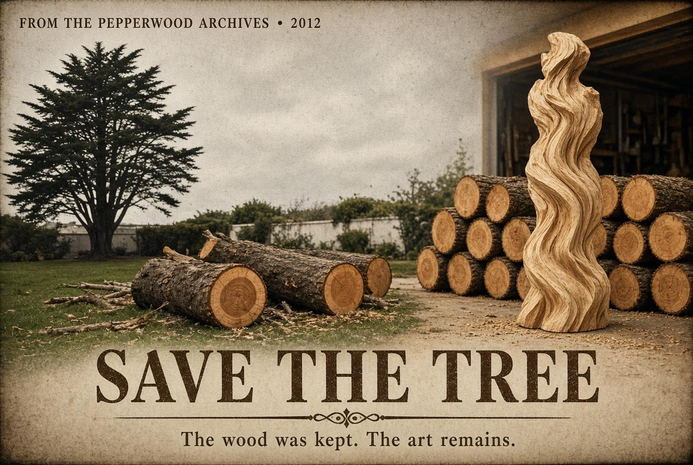
AI image
Some of you have seen the wood pieces. They are part of the history of pepperwood. They are from Save the Tree. A 12:38 video about the day the tree was cut down, how I saved the wood and the art that came from it. I will share the video here.
The best gift I can give to my community is to be willing and in good health
Pepperwood Community News — Across the Alley
I left my room.
That sentence still feels bigger than it looks. Isolation had become a habit: door closed, world narrowed to four walls and whatever I could carry inside my own head and share online. The garage sat there like unused space — storage, parking, a place you walk through on the way to somewhere else.
I decided it could be something else. I started turning it into a place for conversations that don’t require an invitation. The idea was simple and old — neighbors helping neighbors on purpose, not by accident.
Then I looked across the alley.
The building already existed. Four garage doors in a row. Four homes. The attitudes I had been trying to invent were already living there.
Those four doors are not just parking. They are the front of four households that practice community the way some people practice breathing: without making a speech about it. A smile and friendly wave. The small, repeated acts that turn a row of units into a neighborhood.
That is the spirit I hoped to grow in an intentional mutual aid community. I did not have to start from zero. It was already across the alley — four wonderful homes of people who define community spirit by living it.
The solar panels on the roof behind them feel like a fitting detail. Shared light. Shared work. Shared future, even if no one posted a manifesto.
Pepperwood, in this small stretch of alley, is not only an address. It is the moment someone decides the garage is not just for a car, and the moment they notice the people across the way were never waiting to be organized. They were already the community.
If you live in one of those four homes: thank you. You made the experiment feel less like a project and more like coming home.

Beyond My Imagining
For three years I tried to create a community. Little did I know Pepperwood already was the community I was looking for.
Everyone who has stopped by has been friendly and in line with the idea of a healthy, connected community — sharing, mutual support, good company. I have been offered tamales, a health drink, visits, and good vibes.
I talked with one neighbor for a good while. He has been here longer than I have. He played the keyboard for me. We talked and shared more than we ever have before. I learned he was a merit scholar, that he plays piano and sings for the church.
And then there was the three-hour visit from a young man. I have been wanting to connect with the youth. After all, it is their future I want to support.
I always said if I force it, I get a bologna sandwich. If I trust the cosmos, I get a banquet. I knew the transition would be more than I could imagine. I never counted on Social Security, but it affords me the life of my choosing. I didn’t expect to live this long. I thought I would make the garage a wood shop and tinker on small projects.
Never in my wildest dreams did I imagine myself as a community activist, or being this vulnerable. Yet so far it has grown well. I don’t delude myself. There will be challenges and differences. That is no reason not to try.
So far I have had only one bad day. The issue I saw, I addressed. It is beyond the scope of community. We must trust the process and our higher powers.
Until next time: live on your highest timeline. Be of good cheer. Spread your love. and Bring a friend.